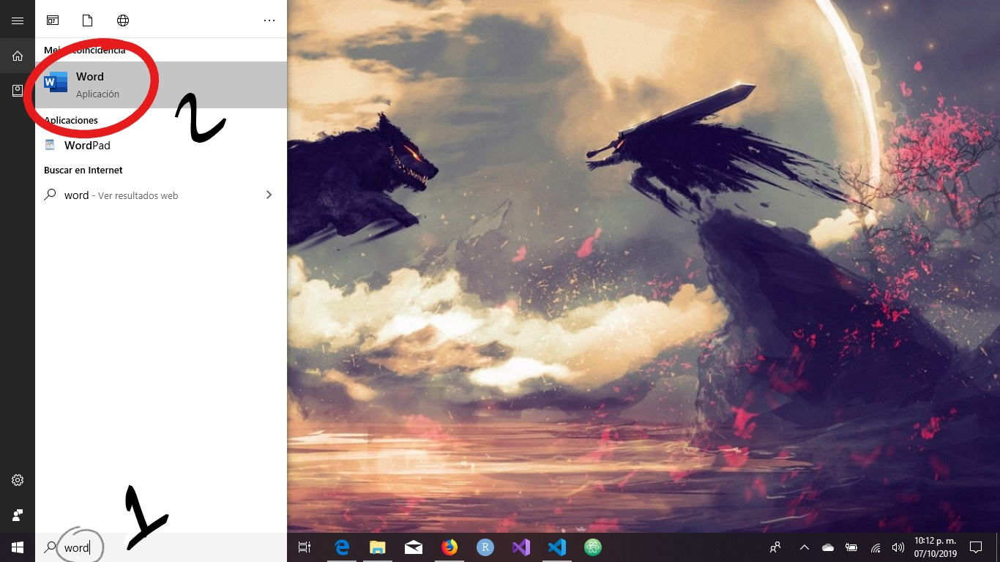
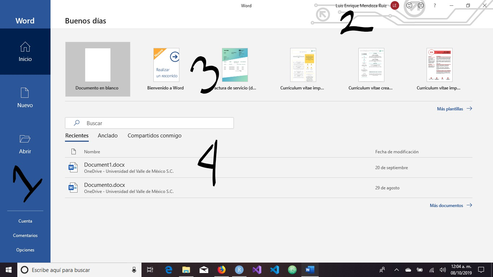
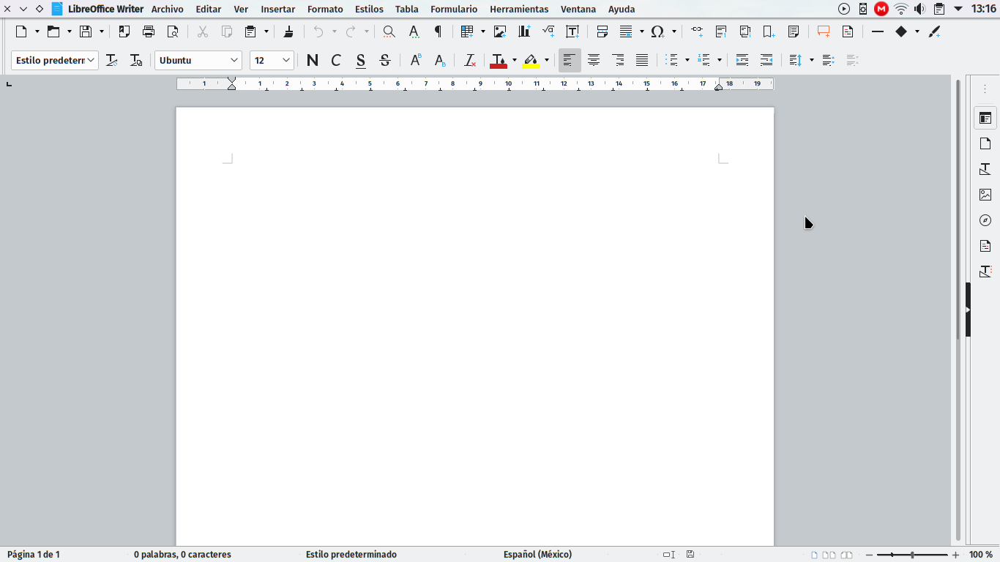
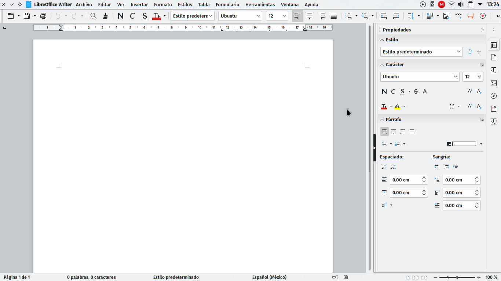

A continuación entraremos de lleno a las herramientas ofimáticas en general, y a Microsoft Office y LibreOffice en lo particular. Estas dos suites ofimáticas son las más utilizadas, aunque la balanza se inclina sobremanera por la primera. La gran cuota de mercado que ostenta la solución de Microsoft vuelve pertinente el aprender y dominar sus aplicaciones, sin embargo, no todos pueden permitirse el adquirir sus licencias. Ante esta dificultad, se vuelve necesario dominar la segunda opción: LibreOffice, la cual es libre y en términos prácticos, gratis.
Abordaremos en primer lugar los procesadores de texto, tales como el casi omnipresente Word y su contraparte libre, Writer. Enseguida cubriremos lo pertinente a las hojas de cálculo, siendo Excel la oferta de Microsoft y Calc la libre. Posteriormente estudiaremos el software para crear presentaciones: PowerPoint e Impress. Para finalizar la unidad, veremos en forma un tanto superficial otras aplicaciones útiles para generar documentos que se salen del estándar de las suites ofimáticas, tales como Typora o RMarkdown para el lenguaje de marcado Markdown y Lyx para Latex.
Entendemos los procesadores de texto como aplicaciones que nos permiten crear, editar y aplicar formato a documentos de texto. Se distancian de los editores de texto en que nos permiten realmente modificar aspectos visuales del texto en sí, como escribir en negritas, en cursivas, poner énfasis en ciertas frases o simplemente hacer más notorios los títulos.
A pesar de su aparente sencillez, existen dos enfoques bien diferenciados en cuanto a cómo debería elaborarse un documento de texto. El más común es el conocido como WYSIWYG, What You See Is What You Get (“lo que ves es lo que obtienes”), haciendo referencia a que lo que se observa en pantalla es lo que se obtendrá al imprimir el documento. Es un enfoque proveniente de las antiguas máquinas de escribir y como tal, también ha heredado ciertos vicios de aquellos tiempos, como el salto de línea, la tabulación, el doble espacio, etcétera. Parece el enfoque más lógico, pero también implica doble trabajo para el autor de documentos: generar el contenido (que es lo que verdaderamente importa) y aplicar el formato. Aplicaciones como Word, Writer o Dreamweaver siguen este enfoque.
El otro enfoque es el conocido como WYSIWYM, What You See Is What You Mean (“lo que ves es lo que quieres decir”). Aquí el protagonismo lo tiene solamente el contenido del documento, por lo que el escritor debe enfocarse en él, dejando el formato para la aplicación. Aunque eso sí, el autor debe conocer la estructura y el orden semántico del software, a la vez que debe memorizar ciertos comandos o etiquetas. Además, el software debe compilar el documento para dotarle un tipo de salida deseado. Las aplicaciones que representan muy bien este enfoque son algo escasas, sobresaliendo Lyx (basado en Latex), aunque está más enfocado a la creación de documentos científicos. Algo similar en cuanto a enfoque, aunque no en cuanto a medios, es el lenguaje de marcado Markdown, el cual aprovecha algunas de las ventajas de Latex para la generación de documentos técnicos, científicos y de ingeniería, además de proveer herramientas para creación de páginas web. Una aplicación que hace buen uso de Markdown es RStudio, cuya implementación llamada RMarkdown permite, además de lo anterior, la ejecución de código R, Python y otros en el propio documento.
A continuación abordaremos las aplicaciones que pertenecen al primer enfoque. Posteriormente veremos unos trazos de aquellas que obedecen al segundo enfoque.
Lo primero que debe realizarse es precisamente ejecutar la aplicación. Cabe mencionar que estas instrucciones aplican a un sistema Windows 10 y Office 2016. Se consigue abrir Word presionando la tecla Windows (también conocida como meta) y escribiendo word. También puede ejecutarse presionando la combinación Windows+S para pedirle a Cortana que ejecute la aplicación.

Al abrirse, lo primero que saldrá será la siguiente pantalla:

Esta es la pantalla de inicio y cuenta con cuatro secciones bien diferenciadas. La primera que salta a la vista es 1) la barra azul de la izquierda. Ahí se encuentran las posibles acciones y opciones del programa, como Inicio (la pantalla actual), Nuevo (ofrece una buena cantidad de plantillas o documentos predefinidos) y Abrir (donde se muestran los documentos recientes, compartidos o presentes en alguna de las cuentas personales o de OneDrive que hayamos registrado). En su parte inferior nos permite acceder a información de la cuenta (como el usuario o la licencia), el poder enviar comentarios sobre la aplicación a Microsoft y opciones de la misma. Volveremos aquí más adelante.
En la parte superior derecha, justo al lado de los botones de minimizar/maximizar, se encuentra el estado de la cuenta que se encuentra abierta (2), además de dos botones con forma de emoji que sirven como atajo para los comentarios positivos y negativos de la sección pasada.
Justo debajo del saludo de “buenos días” se encuentra la sección de plantillas (3), donde Word pone a disposición nuestra un pequeño resumen de las plantillas visibles en la pantalla de Nuevo.
Para terminar, en la parte central inferior se encuentra un resumen de la pantalla Abrir (4).
Daremos clic a Documento en blanco y nos aparecerá la siguiente pantalla.
Writer es el procesador de textos que viene incluido con LibreOffice. Los archivos que genera son del tipo abierto *.odt, open document y se ha vuelto un estándar mundial en cuanto a documentos, aunque no de facto. Al ejecutar la aplicación aparece la siguiente pantalla, aunque puede ser personalizada con más o menos barras de herramientas.

Al lado derecho puede verse una especie de menú basado en iconos. Al abrirse dando clic en cualquiera de estos aparece una barra de herramientas, llamada barra lateral en este caso. Dicha barra puede ser algo redundante con respecto a la barra principal, por lo que podemos cambiar algo de la interfaz de usuario para ganar mayor espacio de edición. Vamos al menú Ver -> Interfaz de usuario -> Barra única y obtenemos la siguiente interfaz:
